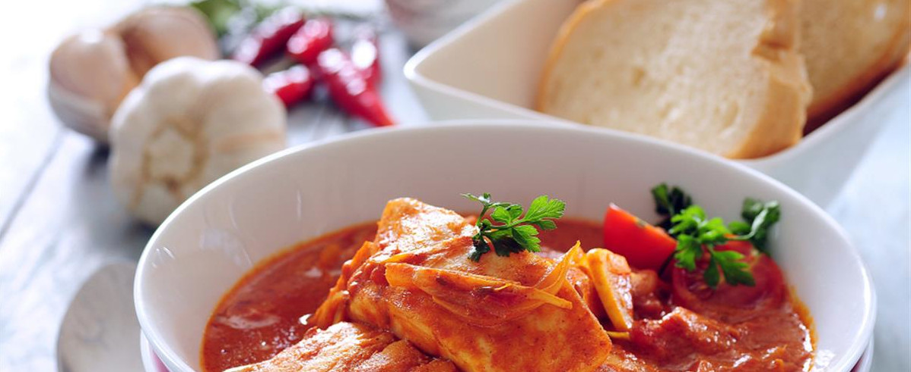
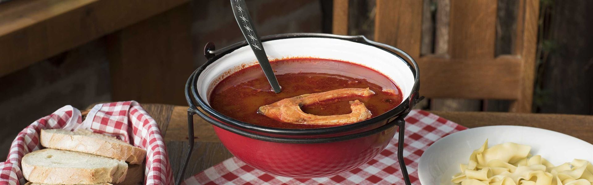
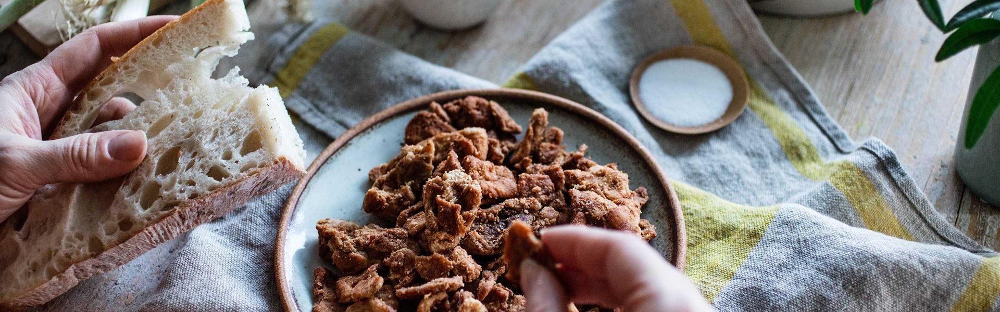
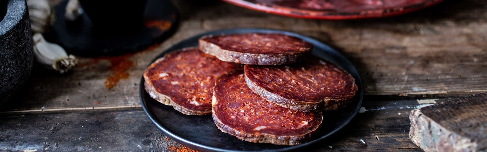

Slavonija ima okus po tradiciji, o čemu svjedoče specijaliteti poput čobanca, ribljeg paprikaša, šunke, kulena i kulenove seke, salenjaka pripremljenih na tradicionalan način od svinjske masti, pite savijače punjene jabukama i orasima ili ukusnih poderanih gaća, jela smiješnog naziva koje će vas zasigurno oraspoložiti. Uz te ukusne specijalitete savršeno će odgovarati neka od poznatih slavonskih vina kao što su iločki traminac, kutjevački rizling i graševina.
Kuhanje na otvorenome, pod vedrim nebom i danas je omiljena slavonska gastronomija u koju su ugrađeni strast, emocije i velike količine nostalgije. Okupljanje oko vatre uz kotliće, roštilje i ražnjeve, uz konje i kočije, na obalama Drave i Dunava, u močvarama Baranje, uz violine i tambure ugođaj je nesvakidašnje snage.
Najpoznatije slavonske gastronomske zvijezde odreda su majstori jela iz kotlića: ribljih i mesnih paprikaša, jela s ražnja, svih veličina, od malih rašlji na kojima se uz žar peče šaran, do onih majestetičnih, na kojima se kroz cijelu noć vrte volovi. Slavonija je zemlja izobilja i gostoprimstva.


